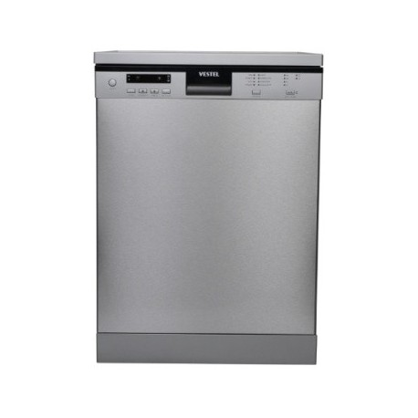

Welcome to indaplovė
Indaplovės | Buitinė technika internetu ir Vilniuje, kaina
2020.10.29 08:25Prisijungimas Prisijungimas Prekių krepšelis Krepšelis tuščias. Viso prekių už 0 € Peržiūrėti krepšelį
+370 608 33354
Parašykite mums
Žemynos g. 18, Vilnius
I-V 10-17 VI 10-13
Skalbimo mašinos Skalbimo mašinos įkraunamos iš viršaus Skalbimo mašinos su džiovinimu Skalbimo mašinos įkraunamos iš priekio Skalbimo mašinos kompaktinės Skalbimo mašinos įmontuojamos Džiovyklės Indaplovės Indaplovės stacionarios Indaplovės įmontuojamos 45 cm pločio Indaplovės įmontuojamos 60 cm pločio Indaplovės įmontuojamos kiti dydžiai Šaldytuvai Šaldytuvai stacionarūs Šaldytuvai įmontuojami Šaldikliai Šaldikliai stacionarūs Šaldikliai įmontuojami Viryklės Dujinės viryklės su dujine orkaite Dujinės viryklės su elektrine orkaite Elektrinės viryklės Indukcinės viryklės Orkaitės Kaitlentės Elektrinės įmontuojamos kaitlentės Dujinės įmontuojamos kaitlentės Domino kompaktinės kaitlentės Dujos + elektra kaitlentės Kaitlentės su gartraukiu Kaitlenčių ir orkaičių komplektai Gartraukiai Įmontuojami gartraukiai Kabinami ant sienos gartraukiai Erdviniai gartraukiai Montuojami į stalviršį gartraukiai Kita technika Pašildymo stalčiai Mikrobangės stacionarios Mikrobangės įmontuojamos Kavos aparatai Maisto atliekų smulkintuvai Blanco Skalbimo mašinos Skalbimo mašinos įkraunamos iš viršaus Skalbimo mašinos su džiovinimu Skalbimo mašinos įkraunamos iš priekio Skalbimo mašinos kompaktinės Skalbimo mašinos įmontuojamos Džiovyklės Indaplovės Indaplovės stacionarios Indaplovės įmontuojamos 45 cm pločio Indaplovės įmontuojamos 60 cm pločio Indaplovės įmontuojamos kiti dydžiai Šaldytuvai Šaldytuvai stacionarūs Šaldytuvai įmontuojami Šaldikliai Šaldikliai stacionarūs Šaldikliai įmontuojami Viryklės Dujinės viryklės su dujine orkaite Dujinės viryklės su elektrine orkaite Elektrinės viryklės Indukcinės viryklės Orkaitės Kaitlentės Elektrinės įmontuojamos kaitlentės Dujinės įmontuojamos kaitlentės Domino kompaktinės kaitlentės Dujos + elektra kaitlentės Kaitlentės su gartraukiu Kaitlenčių ir orkaičių komplektai Gartraukiai Įmontuojami gartraukiai Kabinami ant sienos gartraukiai Erdviniai gartraukiai Montuojami į stalviršį gartraukiai Kita technika Pašildymo stalčiai Mikrobangės stacionarios Mikrobangės įmontuojamos Kavos aparatai Maisto atliekų smulkintuvai Blanco Pradžia / IndaplovėsIndaplovės
Indaplovės stacionarios Indaplovės įmontuojamos 45 cm pločio Indaplovės įmontuojamos 60 cm pločio Indaplovės įmontuojamos kiti dydžiaiPrekių filtras
Valyti Gamintojas Valyti GORENJE AEG SIEMENS Whirlpool Electrolux BOSCH CANDYSvarbu žinoti
Apie mus Prekių pristatymas Atsiskaitymo būdai Prekių grąžinimas Kaip užsisakyti Senos technikos išvežimas Garantija Straipsniai KontaktaiIndaplovės
Derėtų užmiršti mitą, kad indaplovė yra prabangos prekė. Šiuolaikinės indaplovės ne tik tausoja Jūsų brangų laiką, bet ir yra ekonomiškos, taupo vandenį ir elektros energiją. Indaplovė visada išplaus indus geriau, nei plaunant rankomis. Indaploves galite pasirinkti ir siauras, ir plačias - pagal savo pastatymo vietos galimybes. Patogesnės ir ekonomiškesnės yra plačios, t. y. 60 cm pločio indaplovės, tad siūlome surasti galimybę įmontuoti plačią indaplovę.
Indaplovės internetu. Didelis pasirinkimas iš gausaus gamintojų rato: SIEMENS, BOSCH, AEG, Candy, Whirlpool, Electrolux ir kitų. Indaploves kviečiame įsigyti internetu ir sutaupyti.
Šiuolaikiškos indaplovės privalumai:
-Ekonomiškumas;
-Plovimo programų ir papildomų funkcijų gausa;
-Tylus veikimas.
Indaplovės išsimokėtinai. Šioms prekėms suteikiame 2 metų garantiją, prekes pristatome visoje Lietuvoje. Domitės konkrečios indaplovės kaina? Kviečiame užsukti į mūsų pardavimo saloną arba susisiekti su mumis telefonu arba elektroniniu paštu. Indaplovės Vilniuje, Žemynos g. 18.
Maloniai kviečiame klausti ir domėtis. Patyrę konsultantai suteiks visą naudingą informaciją ir padės rasti optimaliausią sprendimą.
1 - 32 iš 91 Electrolux EEQ47200L Indaplovė įmontuojama 60 cm pločio 429 € Electrolux EEM48321L Indaplovė įmontuojama 60 cm pločio 479 € Electrolux EEM63310L Indaplovė įmontuojama 45 cm pločio 499 € Electrolux KEGB9300L Indaplovė įmontuojama 60 cm pločio 589 € SN636X03MD SIEMENS INDAPLOVĖ 654 € Indaplovė stacionari Candy CDCP 6/E 195 € Indaplovė stacionari Candy CDCP 6/E-S 199 € Indaplovė stacionari Candy CDCP 8/E-S 230 € Whirlpool WSIC 3M17 Indaplovė įmontuojama 45 cm pločio 259 € INDAPLOVĖ Electrolux ESF2400OW 272 € Whirlpool WSIO 3T223 PCE X Indaplovė įmontuojama 45 cm pločio 289 € Electrolux EES27100L Indaplovė įmontuojama 60 cm pločio 294 € INDAPLOVĖ Electrolux ESF2400OS 295 € INDAPLOVĖ Whirlpool WIC 3C23 PF 307 € INDAPLOVĖ Electrolux ESL4510LO 309 € INDAPLOVĖ Electrolux ESL2500RO 313 € INDAPLOVĖ Whirlpool WIC 3C26 F 315 € INDAPLOVĖ Electrolux ESF4661ROW 327 € Whirlpool WSFO 3O34 PF X Indaplovė stacionari 335 € Whirlpool WSFO 3O34 PF Indaplovė stacionari 335 € INDAPLOVĖ Whirlpool WBC 3C26 B 339 € Electrolux EES47320L Indaplovė įmontuojama 60 cm pločio 340 € INDAPLOVĖ Whirlpool WFC 3C22 P X 345 € ESL4510LA INDAPLOVĖ Electrolux 350 € Whirlpool WSIP 4O33 PFE Indaplovė įmontuojama 45 cm pločio 355 € SMS25AI02E Bosch INDAPLOVĖ 359 € INDAPLOVĖ Whirlpool WBC 3C26 PF X 359 € BOSCH SPV2IKX10E Indaplovė įmontuojama 45 cm pločio 369 € Electrolux EEA22100L Indaplovė įmontuojama 45 cm pločio 369 € GORENJE GV64160 Indaplovė įmontuojama 60 cm pločio 369 € INDAPLOVĖ Whirlpool WRIC 3C26 PF 369 € INDAPLOVĖ Whirlpool WIO 3T323 6 369 € 1 2 3Prenumeruokite naujienlaiškį
Mes Facebook'e
Aktualijos Populiariausios prekės Akcijos Naujos prekės Apie mus Prekių pristatymas Atsiskaitymo būdai Prekių grąžinimas Kaip užsisakyti Garantija Straipsniai Kontaktai Buitinės technikos parduotuvė UAB "Tarnas". Kodas: 302487563. PVM mokėtojo kodas: LT100005294516. Žemynos g. 18, LT-06128, Vilnius. Telefonas: +37060833354. Sąskaitos nr.: LT914010051003345549, Luminor Bank AB. Banko kodas: 40100, SWIFT: AGBLLT2X. © 2020 UAB "Tarnas". Be UAB "Tarnas" sutikimo draudžiama kopijuoti ir platinti svetainėje esančią informaciją. Elektroninių parduotuvių nuoma verskis.lt Į viršų
